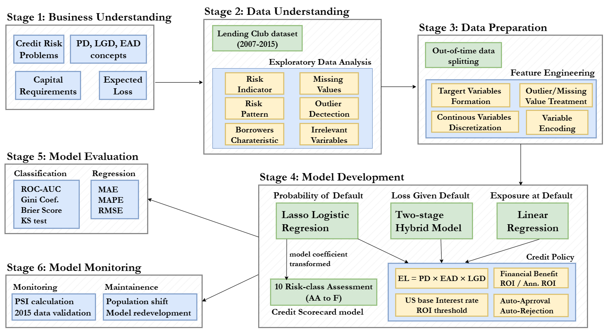
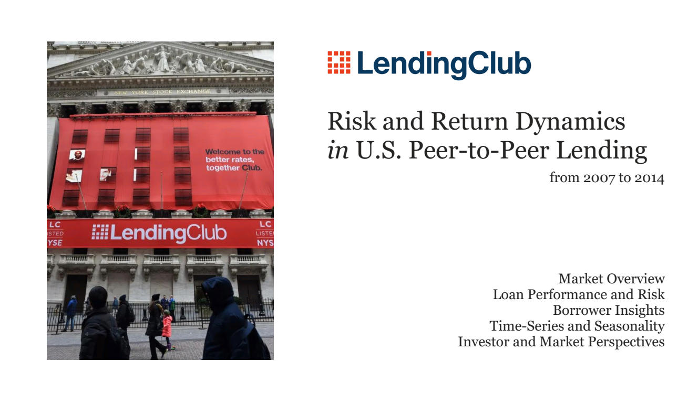
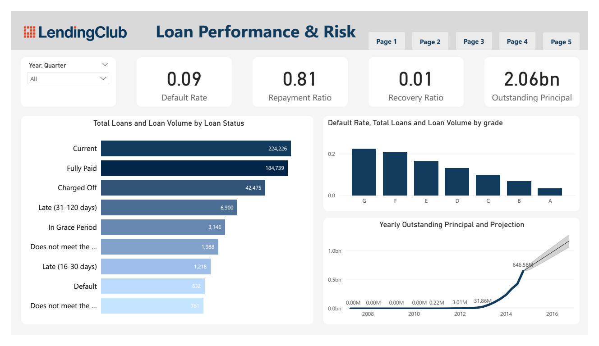
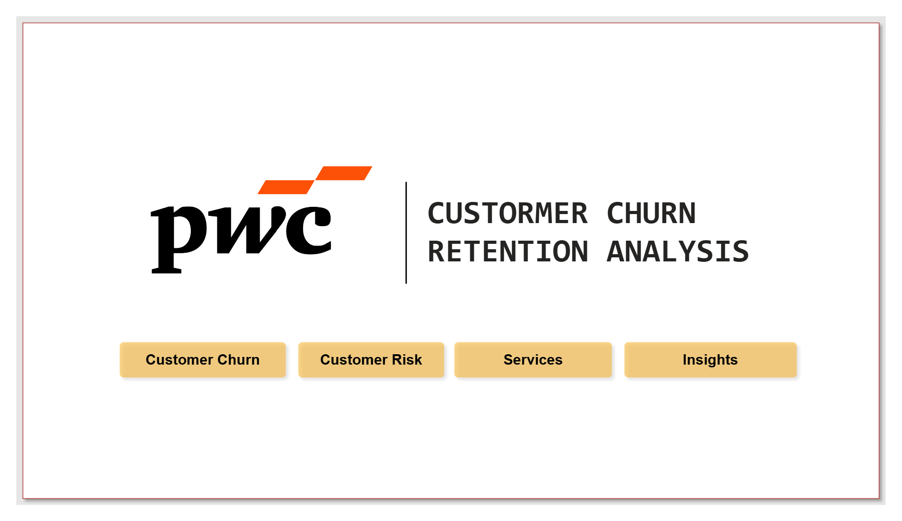
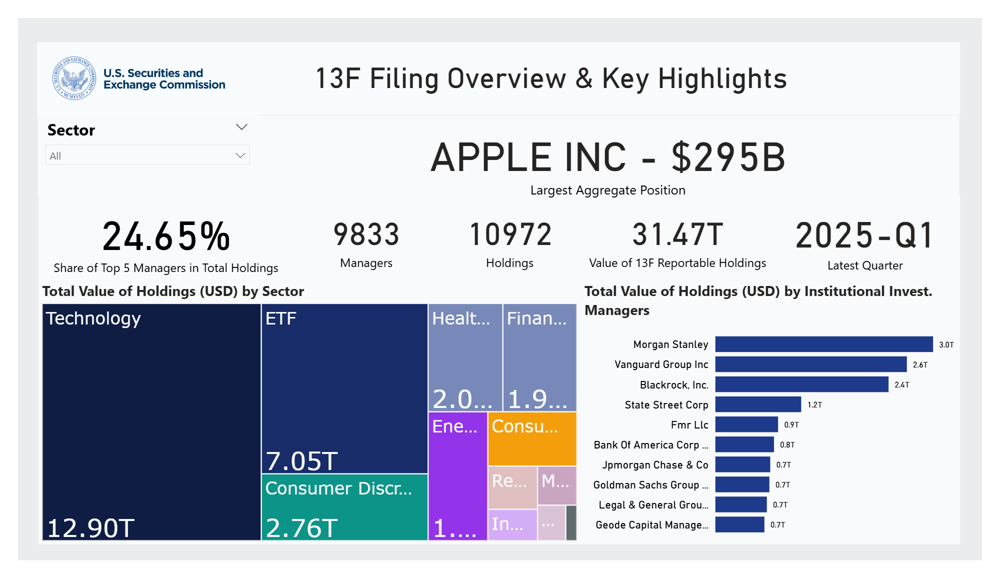
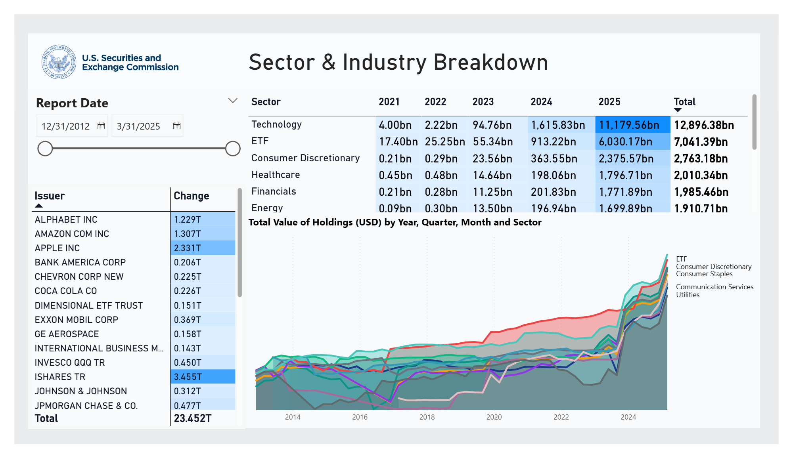

Projects
A small collection of things I’ve built or explored.
Machine Learning system for Credit Risk
feb 2025 to may 2025
This is my bachelor's thesis project where I built a machine learning system for credit risk in context of peer-to-peer lending firm (Lending Club, later became a bank).
The system includes data collection, feature engineering, model training, evaluation, and monitoring.
The core models of the system are PD, EAD, LGD and EL (aligned with Basel framework). For more detailed,
- Probability of Default: logistic regression with dummy variables based on Weight of Evidence (WoE) analysis
- Exposure at Default: linear regression to predict credit conversion factor
- Loss Given Default: a two-stage approach due to 50% zero recovery rates. First stage predicts if recovery > 0 (logistic regression), second stage estimates recovery amount (linear regression)
- Expected Loss: takes predictions from all three models (PD, EAD, LGD), multiplies them together: PD * EAD * LGD, stores the result in the Expected Loss (EL) column
Alongside with machine learning models, I also designed a credit scorecard using logistic regression that maps predicted probabilities to a score range of 300 to 850, which is widely used in the industry.
This makes the model accessible to credit analysts without statistical expertise.
To make the system more financial-wise rather than just giving predictions, a Credit Policy was established to set thresholds for credit acceptance based on business objectives and risk appetite.
It includes risk classification (10-risk classes), decision rules (accept, review, reject), return on investment calculation (for stakeholders), and periodic review process (to ensure continued effectiveness).
At the end of the system, I implemented a monitoring framework to track models changes overtime (when adding new data which has different characteristic from the trained one).
The results demonstrate that even modest percentage improvements in default rates (from 6.71% to 5.65%) and expected losses (from 6.91% to 5.77%) can yield substantial financial benefits when applied at scale across thousands of loans (the Expected Loss decreased from $95,584,225 to $70,457,395, representing a $25 million reduction in expected losses.)
. The system's interpretability and regulatory alignment make it practical for real-world deployment in peer-to-peer lending platforms.
Alternative policy configurations can be designed to be more or less restrictive depending on changing business objectives

Dashboard and report with PowerBI
dec 2024 - ongoing
Aside from building machine learning models, I also created dashboards in PowerBI (as part of my self-learning journey), of course some of them still need improvements but I believe they are good enough to present the results to stakeholders.
My design philosophy is
- think of it as a presentation slide rather than a dashboard, the first glance is important
- keep it simple and clean, avoid clutter. maybe that is my weakpoint, since my dashboards always have the same structure. in the future, i will adapt new ideas
- use colors wisely to highlight important information, i often base on the firms's color theme to make the dashboard look harmonious
things that need to be improved:
- add more interactivity, like drill-down, tooltips, filters
- optimize performance, some dashboards are slow when handling large datasets
- need to learn more about DAX function




